Home / Past papers / MLF End Term / this paper
Machine Learning Foundations 18 Dec 25 - 21 Dec 2025
Elapsed 00:00
Consider the function  defined as
defined as  . For what values of
. For what values of  is
is  convex
convex 
defined as . For what values of is convex 


Consider
 Which of the following is/are true
Which of the following is/are true
Which of the following is/are true  is Hermitian.
is Hermitian.- is unitary.
- is positive semi-definite.
- is positive definite.
- is invertible.
An ML team wants to predict whether an email is spam  or not
or not  by using some classification models. Therefore, the team defines three binary features
by using some classification models. Therefore, the team defines three binary features  where,
where,  = Presence of suspicious keywords (1 = present, 0 = absent)•
= Presence of suspicious keywords (1 = present, 0 = absent)•  = Whether the sender is unknown (1 = unknown, 0 = known)•
= Whether the sender is unknown (1 = unknown, 0 = known)•  = Whether the email contains a link (1 = yes, 0 = no)• The team collects the following dataset from previously classified emails:
= Whether the email contains a link (1 = yes, 0 = no)• The team collects the following dataset from previously classified emails:
 The model makes a prediction using the rule :
The model makes a prediction using the rule :  and
and
 Compute the average loss on this dataset. Enter your answer correct to one decimal place.
Compute the average loss on this dataset. Enter your answer correct to one decimal place.
or not by using some classification models. Therefore, the team defines three binary features where, = Presence of suspicious keywords (1 = present, 0 = absent)• = Whether the sender is unknown (1 = unknown, 0 = known)• = Whether the email contains a link (1 = yes, 0 = no)• The team collects the following dataset from previously classified emails:
The model makes a prediction using the rule : and
Compute the average loss on this dataset. Enter your answer correct to one decimal place.Let  be a continuous random variable with the probability density function:
be a continuous random variable with the probability density function:
 What is the value of
What is the value of 
be a continuous random variable with the probability density function:
What is the value of is a  matrix whose eigenvalues are
matrix whose eigenvalues are  . Consider the set
. Consider the set  as defined below:
as defined below:
 Find
Find  .
.Using the method of Lagrange multipliers, find a point on the circle centered at  with radius
with radius  that is closest to the point
that is closest to the point  . If this distance is
. If this distance is  , enter
, enter  as your answer. Your answer should be an integer.
as your answer. Your answer should be an integer.
with radius that is closest to the point . If this distance is , enter as your answer. Your answer should be an integer.Comprehension passage - the questions below it refer to this
A cafe records the time (in minutes) a customer waits for a freshly made sandwich. The waiting time follows an exponential distribution with mean 5 minutes. Based on the above data, answer the given subquestions.Find the waiting time  such that 95% of customers are served within minutes.
such that 95% of customers are served within minutes.
such that 95% of customers are served within minutes.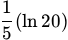
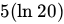
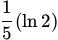
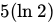
What is the probability that a randomly chosen customer waits between  and
and  minutes
minutes
and minutes 


Using Chebyshev's inequality, find an upper bound for  , where
, where  represents the mean of the random variable . Enter your answer correct to two decimal places.
represents the mean of the random variable . Enter your answer correct to two decimal places.
, where represents the mean of the random variable . Enter your answer correct to two decimal places.Comprehension passage - the questions below it refer to this
Consider the following constrained optimization problem:
 Answer the sub-questions assuming that we take a very small step in the direction of interest.
Answer the sub-questions assuming that we take a very small step in the direction of interest.At the point  which of the following is/are descent directions for the objective function
which of the following is/are descent directions for the objective function
which of the following is/are descent directions for the objective function 

At the point which of the following is/are feasible directions
which of the following is/are feasible directions Is  a potential candidate at which the problem could have a local minimum
a potential candidate at which the problem could have a local minimum
a potential candidate at which the problem could have a local minimum - Yes
- No
Comprehension passage - the questions below it refer to this
If  and
and  , where
, where
 Based on the above data, answer the given subquestions.
Based on the above data, answer the given subquestions.What is the distribution of
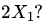
- Normal
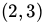
- Normal
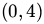
- Normal
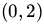
- Normal
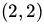
What is the distribution of
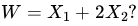
- Normal
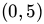
- Normal
- Normal
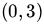
- Insufficient information.
Find the covariance matrix of  .
.
.


Comprehension passage - the questions below it refer to this
A company aims to minimize its production cost, represented by the following quadratic function:  The company applies the gradient descent algorithm to minimize this function, starting with an initial guess of
The company applies the gradient descent algorithm to minimize this function, starting with an initial guess of  and using a step size (learning rate) of
and using a step size (learning rate) of
 , where
, where  Based on the above data, answer the given subquestions.
Based on the above data, answer the given subquestions.Find the updated point  after the first iteration of the gradient descent algorithm.
after the first iteration of the gradient descent algorithm.
after the first iteration of the gradient descent algorithm.


Compute the value of  after the second iteration, i.e.,
after the second iteration, i.e.,  .
.
after the second iteration, i.e., .A real estate company wants to create a model to predict house prices based on the size of the house. They collect data from three recent sales. There are two features: size (hundreds of sq ft) and number of bedrooms. The data-matrix and the price vector (in hundreds of thousands of rupees) are:
, then which of the following is
and the price vector (in hundreds of thousands of rupees) are:
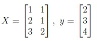
The objective is to find the weight vector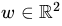
that minimizes the sum of squared errors given by the loss function: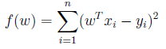
If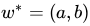
is the value that minimizes , then which of the following is 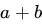
?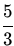
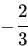
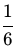
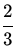
Let  . Find the directional derivative of at the point
. Find the directional derivative of at the point  in the direction of unit vector along
in the direction of unit vector along  .
.
. Find the directional derivative of at the point in the direction of unit vector along .


Consider the convex hull of the set of points  . Which of the following points belongs to the convex hull?
. Which of the following points belongs to the convex hull?
. Which of the following points belongs to the convex hull?


If is a square invertible matrix, which of the following is/are true?
is a square invertible matrix, which of the following is/are true?- The row space of is equal to its column space.
- The nullspace of is equal to its left nullspace.
- The left nullspace of is equal to its row space.
- The nullspace of is equal to its row space.
An analyst monitors the number of defective items produced daily. Let denote number of defective items produced in a day. Using Markov's inequality, the analyst finds an upper bound of  on the probability that at least
on the probability that at least  items are defective. Calculate the mean of .
items are defective. Calculate the mean of .
denote number of defective items produced in a day. Using Markov's inequality, the analyst finds an upper bound of on the probability that at least items are defective. Calculate the mean of .Consider two datasets in  ,
,  and
and  , each having three points as shown below. The figure is drawn to scale. PCA is run on both these datasets separately.
, each having three points as shown below. The figure is drawn to scale. PCA is run on both these datasets separately.

 and
and  are the covariance matrices of the two datasets respectively. If
are the covariance matrices of the two datasets respectively. If  is the eigenvector corresponding to the largest eigenvalue of and
is the eigenvector corresponding to the largest eigenvalue of and  is the eigenvector corresponding to the smallest eigenvalue of , find the absolute value of
is the eigenvector corresponding to the smallest eigenvalue of , find the absolute value of  . Both eigenvectors have unit norm. Your answer should be an integer.
. Both eigenvectors have unit norm. Your answer should be an integer.
, and , each having three points as shown below. The figure is drawn to scale. PCA is run on both these datasets separately.
and are the covariance matrices of the two datasets respectively. If is the eigenvector corresponding to the largest eigenvalue of and is the eigenvector corresponding to the smallest eigenvalue of , find the absolute value of . Both eigenvectors have unit norm. Your answer should be an integer.The time (in minutes) a bank employee spends assisting a customer follows an exponential distribution with parameter  . The time spent (in minutes) from a random sample of 5 customers are as follows:
. The time spent (in minutes) from a random sample of 5 customers are as follows:  Find the maximum likelihood estimate of for the given sample. Enter the answer correct to two decimal places.
Find the maximum likelihood estimate of for the given sample. Enter the answer correct to two decimal places.
. The time spent (in minutes) from a random sample of 5 customers are as follows: Find the maximum likelihood estimate of for the given sample. Enter the answer correct to two decimal places.Anil throws a dart onto a circular board. Let a random variable denote the distance from the center to the point where the dart hits the board. Suppose the PDF of is
 Calculate the value of
Calculate the value of
 . Enter the answer correct to two decimal places.
. Enter the answer correct to two decimal places.
denote the distance from the center to the point where the dart hits the board. Suppose the PDF of is
Calculate the value of
. Enter the answer correct to two decimal places.Using the method of Lagrange multipliers, find a point on the circle centered at with radius . If this distance is
with radius 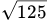
that is closest to the point . If this distance is 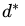
, enter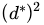
as your answer. Your answer should be an integer.Consider the following constrained optimization problem:
 If
If
 corresponds to the global minimum, find
corresponds to the global minimum, find
 . Enter your answer correct to one decimal place.
. Enter your answer correct to one decimal place.
If
corresponds to the global minimum, find
. Enter your answer correct to one decimal place.Comprehension passage - the questions below it refer to this
If and , where
 Based on the above data, answer the given subquestions.
Based on the above data, answer the given subquestions.What is the distribution of
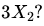
- Normal
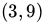
- Normal
- Normal
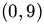
- Normal
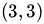
What is the distribution of
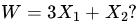
- Normal
- Normal
- Normal
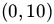
- Insufficient information.
Find the covariance matrix of .
.


Comprehension passage - the questions below it refer to this
A company aims to minimize its production cost, represented by the following quadratic function: The company applies the gradient descent algorithm to minimize this function, starting with an initial guess of and using a step size (learning rate) of
, where Based on the above data, answer the given subquestions.Find the updated point after the first iteration of the gradient descent algorithm.
after the first iteration of the gradient descent algorithm.Compute the value of after the second iteration, i.e., .
after the second iteration, i.e., .Answer key
- Q1 (MCQ, 3 marks): A
- Q2 (MSQ, 3 marks): A, C
- Q3 (SA, 3 marks): 0.4 to 0.6
- Q4 (SA, 3 marks): 2
- Q5 (SA, 3 marks): 4
- Q6 (SA, 3 marks): 45
- Q7 (MCQ, 3 marks): B
- Q8 (MCQ, 2 marks): D
- Q9 (SA, 2 marks): 0.37 to 0.41
- Q10 (MSQ, 2 marks): A, C
- Q11 (MSQ, 2 marks): A, C
- Q12 (MCQ, 1 marks): B
- Q13 (MCQ, 1 marks): B
- Q14 (MCQ, 2 marks): A
- Q15 (MCQ, 2 marks): A
- Q16 (MCQ, 2 marks): B
- Q17 (SA, 3 marks): 1154
- Q18 (MCQ, 4 marks): A
- Q19 (MCQ, 3 marks): A
- Q20 (MCQ, 1 marks): A
- Q21 (MSQ, 3 marks): A, B
- Q22 (SA, 3 marks): 120
- Q23 (SA, 3 marks): 1
- Q24 (SA, 3 marks): 0.06 to 0.10
- Q25 (SA, 4 marks): 0.66 to 0.72
- Q26 (SA, 3 marks): 80
- Q27 (SA, 3 marks): 0.4 to 0.6
- Q28 (MCQ, 1 marks): C
- Q29 (MCQ, 2 marks): C
- Q30 (MCQ, 2 marks): B
- Q31 (MCQ, 2 marks): B
- Q32 (SA, 3 marks): 1154